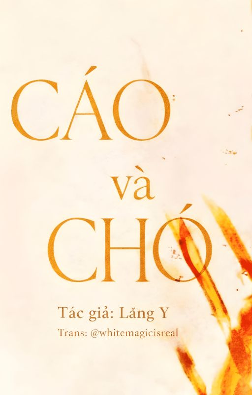

← Về thư viện

Cáo và Chó
Tác giả: Lăng Y
Review
Chưa đọc xong.
Mục lục
Giới thiệu
Chương 1: Xác suất kẻ thù gặp lại nhau
Chương 2: Trái tim treo lơ lửng ấy cuối cùng cũng chết hẳn
Chương 3: Anh, qua đây ngồi đi
Chương 4: Nhìn cậu ta như vậy, cậu còn cứng nổi không?
Chương 5: Thế mà đã có kẻ tự dâng mình đến tận cửa rồi
Chương 6: Mày đào đâu ra anh trai vậy?
Chương 7: Bắt anh phải nhìn rõ phần thịt xương nát bấy bên trong
Chương 8: Quan hệ từng ngủ với nhau
Chương 9: Thời Vọng đã có người khác rồi, anh biết phải làm sao
Chương 10: Họ hôn nhau đến mức đó thật sự rất trơ trẽn
Chương 11: Gặp mặt thì đã sao, anh sợ tôi à?
Chương 12: Anh không sợ em làm gì anh à?
Chương 13: Âm thanh vang lên chát chúa, lòng bàn tay anh tê dại
Chương 14: Cho đến khi em cảm thấy hài lòng mới thôi
Chương 15: Vậy thì cứ ra tay với cậu ta đi
Chương 16: Cứ bán đi, tôi cũng chẳng đáng giá gì
Chương 17: Tôi uống thay em ấy
Chương 18: Nó có thể lấy mạng người một cách âm thầm lặng lẽ
Chương 19: Em muốn làm gì anh cũng được
Chương 20: Bản thân cũng chẳng giữ được chút giá nào cả
Chương 21: Đầu ngón tay ấm áp vuốt qua làn môi
Chương 22: Như anh mong muốn, em sẽ làm hết
Chương 23: Tôi cứ tưởng cậu đã dứt khoát được rồi
Chương 24: Gay rồi, người này thật sự nổi giận rồi
Chương 25: Đó vẫn là một sự lựa chọn không có lối thoát
Chương 26: Anh xin lỗi...
Chương 27: Tối nay em không đưa anh về khu huấn luyện nữa đâu
Chương 28: Em biết phải làm gì với anh bây giờ?
Chương 29: Cậu Thời, khi nào mới định sắp xếp cho anh đây?
Chương 30: Anh khóc đấy à?
Chương 31: Nếu thực sự đã tha thứ, thì sẽ không tàn nhẫn đến thế
Chương 32: Anh cắn mấy cái đi, không thì em áy náy lắm
Chương 33: Sau này đừng nhịn, cũng đừng sợ em
Chương 34: Dẫu tình yêu lụi tàn chỉ còn lại tơ vương
Chương 35: Hợp đồng bán thân của anh
Chương 36: Chỉ còn lại lòng căm thù tột độ
Chương 37: Anh không chấp nhận chia tay như thế này
Chương 38: Giáng một cái tát lên mặt cậu
Chương 39: Thiếu bạn giường thì gọi cho anh, đừng tìm người khác
Chương 40: Đừng giải thích nữa, cũng đừng nói yêu tôi
Chương 41: Em thấy anh rẻ mạt, chẳng lẽ em không thế sao?
Chương 42: Sốt nhẹ, 38 độ
Chương 43: Lần trước dùng chưa hết, tối nay tiếp tục nhé
Chương 44: Em có một yêu cầu vô lý
Chương 45: Anh muốn đánh cược một lần, cược em lại mềm lòng với anh thêm lần nữa
Chương 46: Ở chỗ Thời Vọng không có thuốc
Chương 47: Bên trong đều đã vụn vỡ cả rồi
Chương 48: Cả đời này anh đều là của em rồi
Chương 49: Để em dẫn dắt, để em kiểm soát
Chương 50: Bộ lông thì đẹp mà mưu tính thì nhiều, trông cứ như cáo vậy
Chương 51: Nắm chặt rồi, có chết cũng không buông tay
Chương 52: Chào mừng về nhà
Chương 53: Chương cuối